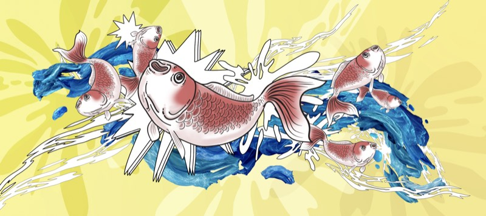
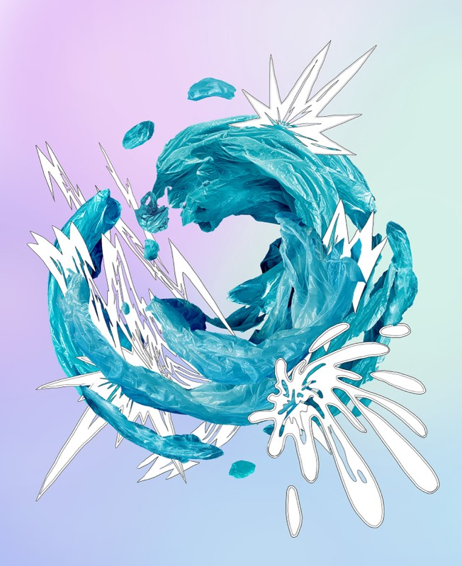
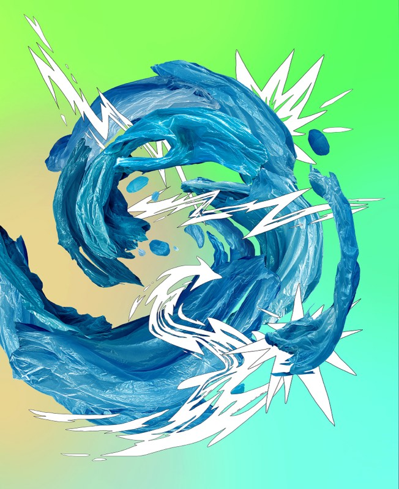
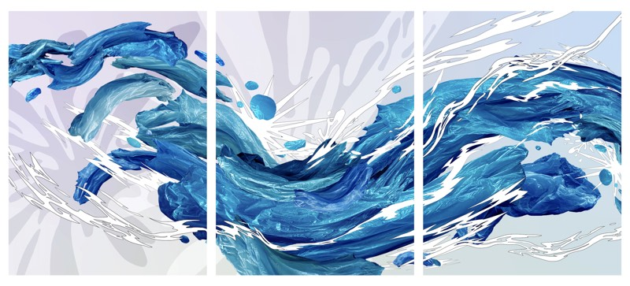
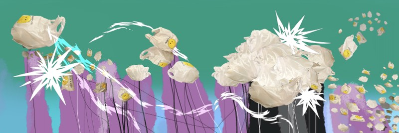
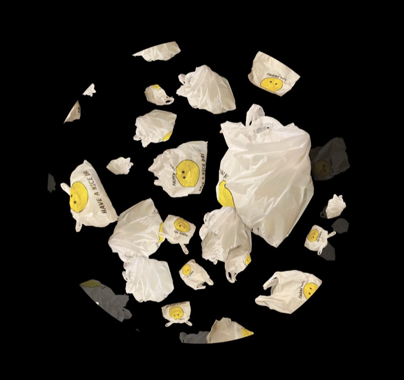

Work / Splash
Splash
Water is the most essential element of life, shaping and shaped by everything it touches. In this series, I use plastic bags — an ordinary product of modern consumption — to recreate the movement of water, circling and pulsing between nature and the human-made world that has come to surround it.
I'm drawn to making that movement beautiful enough to almost let viewers forget what it actually is: a stand-in, a substitute, a surface performing as something it isn't. The more convincing the illusion, the more it reveals about how easily we accept appearance in place of substance.







Click any image to enlarge. Year and dimensions to be added — contact for details or print inquiries.